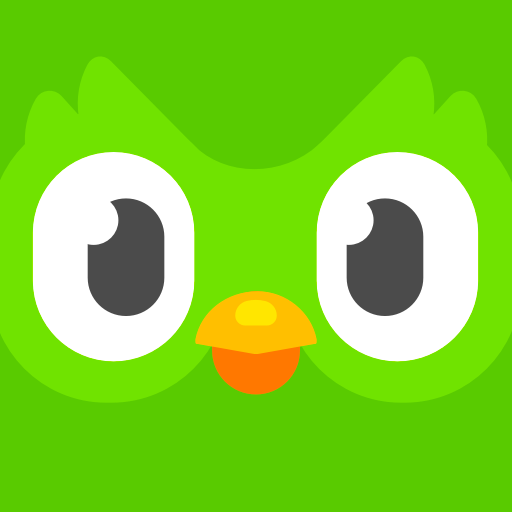

Hi 👋 I am Loizos! This is my personal website.
Master of Behavioral and Decision Sciences Degree University of Pennsylvania
Graduating 🎓 December 2022
I have a blog that is infrequently updated 📝
See my projects for some things I’ve been working on 🛠
Currently learning and on : LoizosKons
Feel free to get in contact below